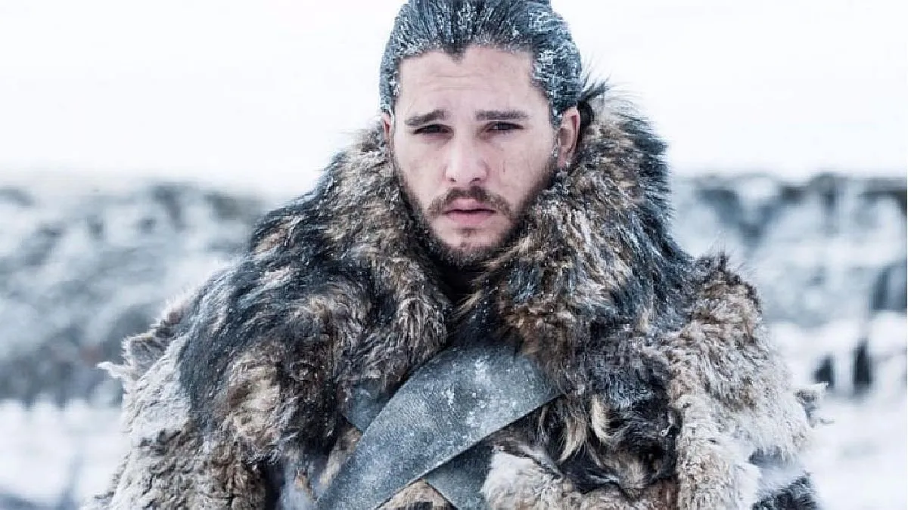

jon

Lord Jon Nieve es el Lord Comandante de la Guardia de la Noche nº 998. Es hijo bastardo de Lord Eddard Stark. Su lobo huargo, Fantasma, es albino y mudo. El emblema personal de Jon consiste en los colores de la Casa Stark invertidos, un lobo huargo de plata corriendo sobre fondo de cenizo
La paternidad de Jon Nieve sigue siendo un misterio. Se cree que nació hacia el final de la Rebelión de Robert, un mes antes o después del saqueo de Desembarco del Rey. Al regresar de la guerra, Lord Eddard Stark llevó el bebé recién nacido a Invernalia, insistiendo en que creciera junto con el resto de la familia.
Jon recibió la educación de un noble por el maestre Luwin junto al resto de hijos de Lord Eddard. Su presencia en Invernalia resultó ser una fuente de fricción entre Eddard y su esposa Catelyn, quien veía a Jon como un recordatorio constante de la infidelidad de su marido. Ella lo trataba con frialdad, haciéndole sentir incómodo. Su apariencia, la cual se asemeja a Eddard más que cualquiera de sus hijos legítimos, tensa más la relación entre él y su madrastra. Sin embargo, Eddard fue siempre "muy protector" con Jon, tratándolo como a un hijo más.[7][8] No obstante, Jon siempre tuvo problemas con su bastardía, sintiéndose en ocasiones apartado, una de las razones que le llevarían a querer unirse a la Guardia.
Creciendo como los dos hijos mayores, Jon desarrolló una amistosa rivalidad con Robb, con quien difiere tanto en apariencia como personalidad. Un día, se encontraban en pleno entretenimiento jugando con espadas de madera, gritando que eran personajes con nombres de grandes héroes. Jon en una ocasión proclamó ser el "Señor de Invernalia", lo que llevó a Robb responder rápidamente que él "no podría nunca ser el Señor de Invernalia", ya que nació bastardo. Este fue un golpe doloroso para Jon, pues quería llegar a serlo pero por su condición era algo imposible. De pequeño, su héroe favorito había sido el Joven Dragón, el niño rey que había conquistado Dorne a la edad de catorce años. Jon soñaba con llevar a sus hombres a la gloria, al igual que hizo el rey Daeron, y llevar el honor a su casa.